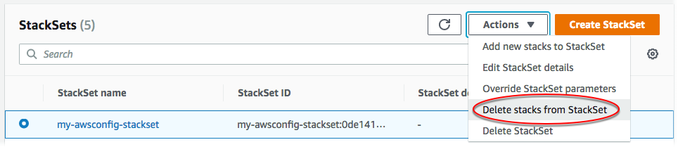
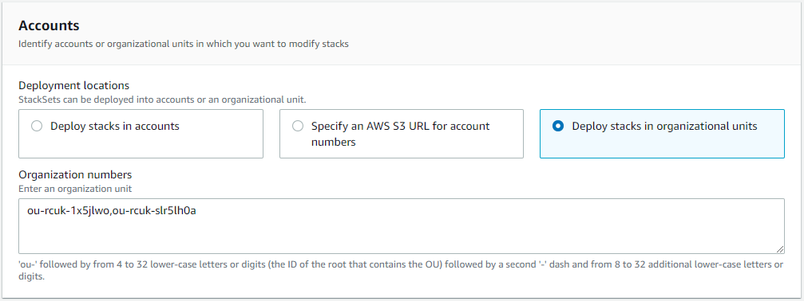

スタックセットからのスタックインスタンスの削除
AWS Management Console 内で、または AWS CLI で AWS CloudFormation コマンドを使用することで、スタックインスタンスをスタックセットから削除できます。この手順では、すべてのスタックを削除します。
サービスマネージド型のアクセス許可を持つスタックセットの場合、最上位の組織単位 (OU) からスタックインスタンスを削除すると、スタックセットのターゲットとして OU が削除されます。
AWS Management Console を使用してスタックインスタンスを削除する
AWS CloudFormation コンソール (https://console.aws.amazon.com/cloudformation
) を開きます。 -
ナビゲーション [StackSets] を選択します。StackSets ページで、スタックセットの作成 で作成したスタックセットを選択します。
-
スタックセットを選択した状態で、[Actions] (アクション) メニューから [Delete stacks from StackSet] (StackSet からスタックを削除) を選択します。
 -
[Set deployment options (デプロイオプションの設定)] ページで、スタックインスタンスを削除するアカウントを選択します。
-
[セルフマネージド型のアクセス許可] [アカウント] で [Deploy stacks in accounts (スタックをアカウントにデプロイ)] を選択します。ターゲットアカウント番号をテキストボックスに貼り付け、複数の数字をカンマで区切ります。
[サービスマネージド型のアクセス許可] [アカウント] で [Deploy stacks in organizational units (スタックを組織単位にデプロイ)] を選択します。スタックセットがターゲットとする OU の ID を貼り付けます。
注記
StackSets は、指定したターゲット OU のすべての子 OU からスタックインスタンスを削除します。
 -
[Deployment Region (デプロイリージョン)] で、スタックインスタンスを削除するリージョンを選択します。この場合は、[米国東部 (バージニア北部) リージョン] と [米国西部 (オレゴン) リージョン] を選択します。
-
[Deployment options (デプロイメントオプション)] で次のようにします。
-
[Maximum concurrent accounts (同時アカウントの最大数)] については、デフォルト値の [数値] と [1] をそのまま使用します。
-
[Failure tolerance (障害耐性)] については、デフォルトの [数値] と [0] をそのまま使用します。
[Retain stacks (スタックの保持)] 領域で、デフォルト設定の無効をそのまま使用します。
スタックセットからスタックを削除する際、[Retain stacks (スタックの保持)] オプションによって、スタックセットからスタックインスタンスを削除するが、スタックと関連するリソースは保存する、という選択を行うことができます。[Retain stacks (スタックの保持)] オプションを選択してスタックセットからスタックを保存すると、スタックのリソースは現在の状態のままですが、スタックはスタックセットの一部ではなくなります。スタックを再関連付けするか、既存のスタックをスタックセットに追加するには、「AWS CloudFormation StackSets へのスタックのインポート」を参照してください。
[Next] (次へ) をクリックします。
-
-
-
[確認] ページで選択内容を確認し、[送信] を選択します。
-
スタックの削除が終了したら、StackSet 詳細ページの [Stack instances (スタックインスタンス)] タブで、スタックセットからスタックインスタンスが削除されたことを確認できます。
![スタックインスタンスに関する情報を表示するには、スタックセット詳細ページの [Stack instances] (スタックインスタンス) タブを使用します。](images/console-stackset-detail-stack-instances.png)
AWS CLI を使用してスタックインスタンスを削除する
委任された管理者として行動する場合は、StackSets コマンドを実行するたびに --call-as パラメータを DELEGATED_ADMIN に設定する必要があります。
--call-asDELEGATED_ADMIN
-
delete-stack-instancesコマンドを実行します。--stack-set-nameで、スタックセット名my-awsconfig-stacksetを指定します。次の例で示している通り、
FailureToleranceCountパラメータで0をMaxConcurrentCountに、1を--operation-preferencesに設定することで、障害耐性および同時アカウントの最大数を設定します。代わりに割合を適用するには、FailureTolerancePercentageまたはMaxConcurrentPercentageを使用します。このウォークスルーでは、割合ではなくカウントを使用します。注記
MaxConcurrentCountの値は、FailureToleranceCountの値に依存します。MaxConcurrentCountは、最大でFailureToleranceCountより 1 だけ多くなります。--retain-stacksはdelete-stack-instancesに必要なパラメータであるため、スタックを保持 (保存) したくない場合、--no-retain-stacksを追加します。このチュートリアルでは、スタックを保持しないため、--no-retain-stacksパラメータを追加します。[セルフマネージド型のアクセス許可]
account_IDを スタックセットの作成 でスタックセットを作成するために使用したアカウントに置き換えます。aws cloudformation delete-stack-instances --stack-set-name my-awsconfig-stackset --accounts '["0123456789012"]' --regions '["eu-west-1"]' --operation-preferences FailureToleranceCount=0,MaxConcurrentCount=1 --no-retain-stacks[サービスマネージド型のアクセス許可]
--deployment-targetsで、スタックインスタンスを作成した組織 (ルート) ID または OU ID を指定します。注記
StackSets は、指定したターゲット OU のすべての子 OU からスタックインスタンスを削除します。
aws cloudformation delete-stack-instances --stack-set-name my-awsconfig-stackset --deployment-targets OrganizationalUnitIds='["ou-rcuk-1x5jlwo", "ou-rcuk-slr5lh0a"]' --regions '["eu-west-1"]' --no-retain-stacks -
必要に応じて、スタックの削除が完了したあと、
describe-stack-set-operationコマンドを実行してスタック削除オペレーションのステータスおよび結果を表示し、スタックセットからスタックインスタンスが削除されたことを確認します。--operation-idには、delete-stack-instancesコマンドに返されたオペレーション ID を使用します。aws cloudformation describe-stack-set-operation --stack-set-namestackSetName--operation-idddf16f54-ad62-4d9b-b0ab-3ed8e9example